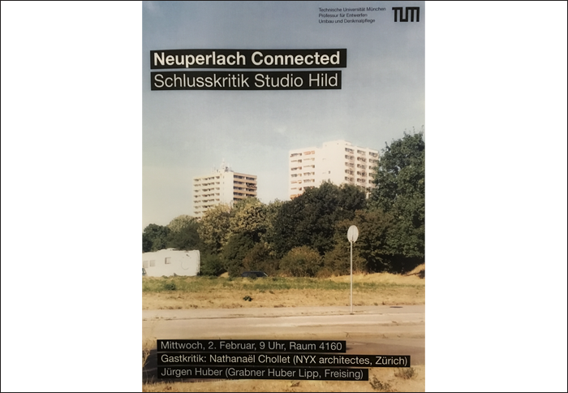

03.02.2016 FINAL REVIEW STUDIO HILL TU MUENCHEN
Nathanaël Chollet is invited as an expert for the final review of the studio Hild at the Technische Universität Munich.
Nathanaël Chollet is invited as an expert for the final review of the studio Hild at the Technische Universität Munich.